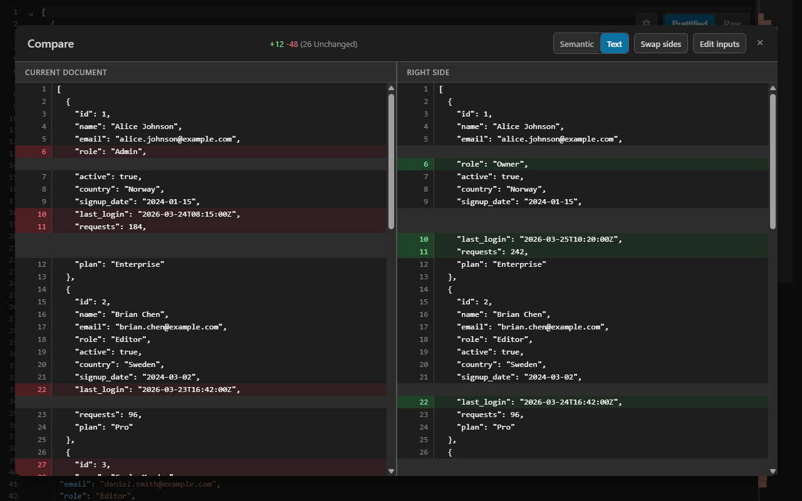

A reformatted file makes a line-based JSON diff useless: every line changes and the one real edit hides in the noise. CodePrettify parses both sides and compares values — key order and formatting ignored, array items matched by id — with two editable inputs and everything processed on your device.
Semantic mode reports changed, added, and removed values while ignoring indentation and object-key order.
Semantic example
One real change, hidden inside a full reformat
The two configurations below differ in key order, indentation, and one actual value. A line diff flags nearly every line; a semantic JSON diff reports exactly what changed.
Left side
Deployed configuration
The version currently running, pretty-printed with keys in their original order.
Comparison is listed among the operations that never leave the extension or the Windows app. Unlike compare-JSON-online tools, nothing you paste is uploaded.
Hands-on tutorial
Compare two JSON payloads step by step
Use the two configurations above, or any pair of payloads you are reviewing. The important habit is checking which side is which before you read added and removed markers.
Open Compare
Press Ctrl+Alt+D, or choose More Actions → General tools → Compare. The Command Palette (Ctrl+Shift+P) finds it by name as well.
Check the prefilled left side
The left input starts with the current document and the right input starts empty. Each side has its own Use current document and Clear controls, so you can rebuild either input at any time.
Paste the second version on the right
Both sides are fully editable. Semantic availability is detected from the two inputs, not from the open file — you can paste two JSON payloads while viewing a JavaScript or CSS document and still get a structured comparison.
Fix the direction with Swap sides
Before comparing, Swap sides exchanges the actual inputs. Direction matters: an entry reported as added on one orientation is reported as removed on the other.
Run the comparison
Semantic mode is selected automatically when both inputs parse as JSON, JSONC, JSON Lines, YAML, or TOML — the mode toggle appears only when semantic comparison is possible. Ctrl+Enter runs the open dialog’s primary action.
Read the change set, including its counters
For the sample, expect a single changed value: replicas from 2 to 3. Change sets are capped at 5,000 entries, and the counters show a trailing ellipsis when truncated. Identical sources show a centered no-differences message instead of an empty list.
Refine without retyping
After a comparison, Swap Sides flips only which side is displayed; use Edit inputs to change the actual text and compare again. The Windows app adds Previous/Next difference buttons for stepping through a long result.
Before you trust a diff
A comparison is evidence only when you know how it was computed. Confirm these five points.
The left/right orientation matches how you read added and removed.
The mode is the one you intended — semantic requires both sides to parse.
The change counters have no trailing ellipsis, or you accept a truncated list.
Arrays you care about carry a shared unique id, _id, uuid, or guid key for identity matching.
Very large text comparisons may have used the faster positional fallback.
Two modes
Semantic structure or exact text — the tool tells you which you get
Semantic mode compares parsed values. Text mode compares exact lines with synchronized pane scrolling, and in the Windows app adds an Ignore whitespace option that disregards all whitespace inside lines. When either side fails to parse, the comparison falls back to text.
The result lists what changed; a structured change can jump to the editor line while the source still matches the current JSON document.

The comparison view follows the Auto/Light/Dark theme you choose in Settings.
1
Load both sides
Left starts with the current document; paste, edit, clear, or swap either side.
2
Let the mode resolve
Both sides parse as JSON, JSONC, JSON Lines, YAML, or TOML — semantic. Otherwise — text.
3
Navigate the result
Flip the displayed sides, return to Edit inputs, or step differences in the Windows app.
Comparison engine
What the JSON diff engine actually does
Supported structures
JSON, JSONC, JSON Lines
YAML and TOML
Detected from the two inputs
Works while viewing any format
In JSON Lines, the app accepts JSONC comments and trailing commas per record; the extension requires strict JSON per line.
Noise it ignores
Indentation and line breaks
Object-key order
Formatting-only rewrites
Only value and structure differences are reported in Semantic mode.
Array identity matching
All-object arrays with a unique primitive id, _id, uuid, or guid
Same key required on both sides
Matched by identity, not position
All other arrays compared positionally
Stated limits
Change sets capped at 5,000 entries
Trailing ellipsis marks truncation
Text fallback for invalid inputs
Very large text comparisons — over roughly 5,000 combined lines in the extension, 20,000 in the app — switch to a faster positional comparison that can overstate changes when lines shift.
Careful line jumping
Jumps only while a side still exactly matches the current document
JSON documents with positionally addressed changes only
Identity-matched array changes are listed without a jump
Independently pasted or edited text never produces a misleading jump.
Text mode tools
Synchronized pane scrolling
Ignore whitespace (Windows app)
Previous/Next difference (Windows app)
Compare two files (app)
Browse two files from disk
Current file prefilled
The pair is remembered
Dedicated comparison tab
Selecting exactly two supported files in Explorer can expose the Compare command directly.
Decision guide
Read the result for what it is
What you see
What it means
Best next action
No Semantic/Text toggle
At least one side does not parse as a supported structured format, so only text comparison is possible.
Repair or complete the invalid side, then compare again for a structural result.
Change counter ends with an ellipsis
The change set hit the 5,000-entry cap and the list is truncated.
Compare the specific subtree or record range you care about instead of the whole document.
Noisy diff on very large text
Above roughly 5,000 combined lines (extension) or 20,000 (app), the faster positional comparison can overstate changes when lines shift.
Compare smaller sections, or use the Windows app for the higher threshold.
Indentation-only line changes
The lines differ only in whitespace, not content.
In the Windows app’s Text mode, enable Ignore whitespace; or use Semantic mode when both sides parse.
A reordered array reports many changes
The elements lack a shared unique id, _id, uuid, or guid key, so the array is compared positionally.
Keep a stable identifier on both sides to get identity matching.
Centered no-differences message
The two sources are identical in the selected mode.
Nothing to review — swap in the next pair with Use current document or Clear.
FAQ
JSON compare questions
How do I compare two JSON files?
In the extension, open Compare, keep the current document on the left, and paste the second file on the right — each side is fully editable. The Windows app additionally lets you browse two files into a dedicated comparison tab, and selecting exactly two supported files in Explorer can offer a Compare command.
Do key order and formatting affect the JSON diff?
Not in Semantic mode. It compares parsed structure, so reordered object keys, indentation, and line-break differences produce no changes. Switch to Text mode when you specifically need exact line-by-line differences.
What makes the comparison semantic?
Both sides are parsed into structured data and compared value by value instead of line by line. Arrays whose elements are all objects with a unique primitive id, _id, uuid, or guid key on both sides are matched by identity, so a reordered array reports real edits instead of rewriting every position; all other arrays are compared positionally.
Is my JSON uploaded when I compare it?
No. Comparison runs entirely on your device in both the extension and the Windows app. Nothing you paste or open is sent to a server — the practical difference from compare-JSON-online tools.